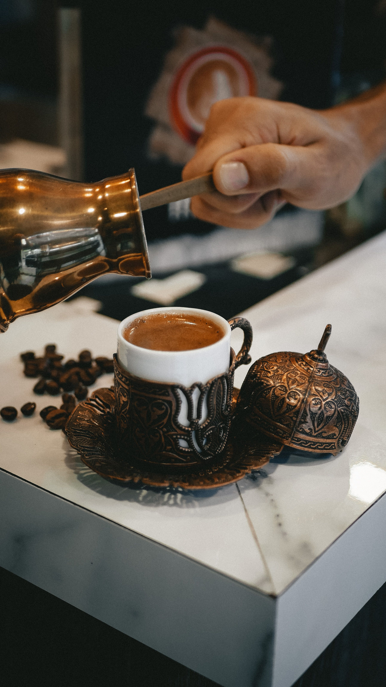
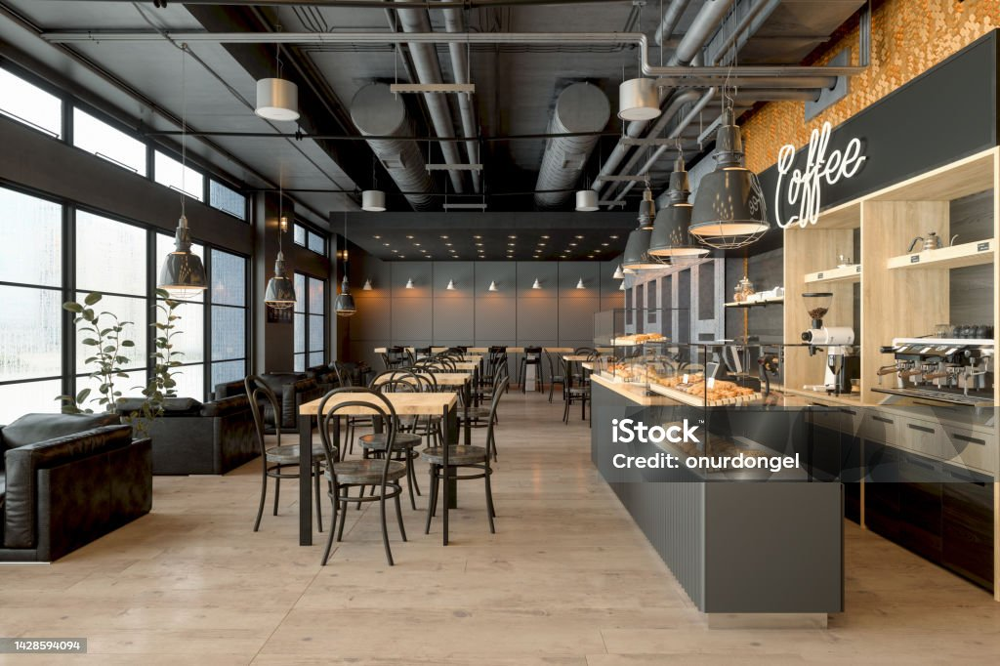

Кофе, сваренный в турке
В «Zerno» мы варим кофе по старинному рецепту: на медленном огне, в медной турке, с пенкой, которая держит аромат до последнего глотка.
Мы сами обжариваем зёрна и подбираем помол под каждый напиток. Приходите за чашкой, которая согреет в любую погоду.

Место, где время идёт медленнее
Большие окна, мягкие диваны и тёплый свет ламп. Приходите с друзьями, на встречу или просто побыть наедине с чашкой кофе.
